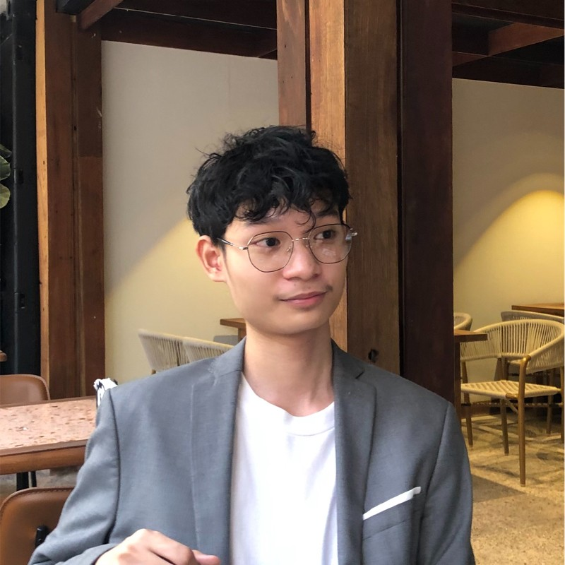

Alonzo Andrei G. Rimando

Summary
As a dedicated student, I have been recognized with multiple academic honors. I am currently pursuing a combined Bachelor of Science and Master of Science in Computer Science at De La Salle University Manila. Additionally, I am a recipient of the prestigious DOST-SEI Merit Scholarship, which underscores my commitment to excellence in the field of computer science.
Beyond academics, I have honed my public speaking and leadership skills as a former member of Toastmasters International in Makati, Philippines. This experience has equipped me with the ability to communicate effectively and lead with confidence.
With a solid educational foundation, a passion for computer science, and a focus on continued personal growth, I am well-suited for various roles within the tech industry.
Education
-
Bachelor of Science and Master of Science in Computer Science - De La Salle University Manila
- Location: Manila, National Capital Region, Philippines
- Currently taking
- Recipient of the DOST-SEI Merit Scholarship
- Participated in numerous organizations that improved my interpersonal skills
-
High School Diploma - Lorma Colleges Basic Education Schools
- Location: Urbiztondo, San Juan, La Union
- Period: June 2017 - May 2019
- Graduated with the highest honors
- Participated in various academic and non-academic competitions
Experience
-
Vice President of Membership - TOPS Toastmasters Club
- Location: Makati, National Capital Region, Philippines
- Period: May 2023 - May 2024
- Developed and executed strategies to attract and retain members.
- Identified target demographics for membership growth.
- Oversaw marketing campaigns and promotional activities.
- Built partnerships to enhance membership opportunities.
- Supported the organization's mission and growth through member engagement.
-
Assistant Vice President for Organizational Development - Lasallian Scholars Society, De La Salle University
- Location: Manila, National Capital Region, Philippines
- Period: Oct 2023 - Present
- Spearheaded initiatives aimed at fostering camaraderie and collaboration within the organization
- Designed and led comprehensive team-building programs
- Developed strategic projects that enhance organizational culture
- Drove continuous improvement in member engagement
-
Non-First Timer - Lasallian Ambassadors, De La Salle University
- Location: Manila, National Capital Region, Philippines
- Period: Feb 2024 - Present
- Oriented freshmen about the university
- Assisted in the facilitation of activities during the Lasallian Personal Effectiveness Program
- Provided support to the organization's events and projects
- Coordinated logistics for organizational events, ensuring seamless execution and optimal resource utilization.
- Developed my interpersonal skills through hands-on experience in orientation and HR activities, improving communication, teamwork, and leadership abilities.
Skills
-
Public Speaking:

-
Leadership:
-
Teamwork:
-
Web Development:
-
Data Analysis:
-
Programming:
-
Artificial Intelligence:
-
Microsoft Office Suite:
Programming Languages
- Python
- Java
- C
- JavaScript
- HTML
- CSS
Projects
-
Logic-Based Inference System for Family Relationships using PROLOG
- Collaborated with a team to develop a sophisticated logic-based inference system for family relationships utilizing PROLOG
- Implemented rules and facts to represent family relationships and infer new relationships through logical rules and queries
-
Star Classification Program using Python AI Libraries
- Developed a comprehensive Star Classification Program utilizing advanced Python AI libraries, designed to classify celestial objects based on their spectral characteristics
- Utilized machine learning algorithms to classify stars into distinct categories based on spectral data
-
Sokobot - A Sokoban Solver Program
- Participated in a team project that employed foundational Artificial Intelligence techniques to create a program for solving Sokoban puzzles using state-based models.
- Implemented search algorithms to find optimal solutions for Sokoban puzzles through state-space search methods
Others
-
Language Proficiency
- English: Fluent
- Filipino: Native
-
-
© Alonzo Rimando. All rights reserved.